I. Work completed since First Forum of Azerbaijani Scientists Living Abroad
Online meetings were held with rectors of universities that participated in the Forum, and a concrete programme of near- and medium-term activities was prepared on the basis of ideas voiced during the Forum. All members of the WAAS Executive Board (daab-waas.com) took an active part in these online meetings. Work in this direction is continuing. To increase the effectiveness of these efforts, coordinators were appointed between WAAS and the universities that participated in the Forum (after the Forum, cooperation memoranda were also signed with ANAS and Azerbaijan Medical University, which were not represented at the First Forum), and their areas of responsibility were defined. A list of universities with which WAAS held online meetings is provided below.
Universities that held online meetings
- Azerbaijan State University of Economics (UNEC)
- Azerbaijan University of Architecture and Construction
- Azerbaijan Medical University
- Baku State University
- Baku Engineering University
- Karabakh University
Coordinators appointed by WAAS
| Institution | Coordinator(s) |
|---|---|
| ADA University | Ilham Axundov (Canada), Elshad Allahyarov (USA) |
| Azerbaijan State University of Economics (UNEC) | Elkhan Sadigzade (Germany) |
| Azerbaijan State Pedagogical University | Sevinj Mammadova (USA) |
| Azerbaijan University of Architecture and Construction | Abdulla Avey (Türkiye) — new member |
| Azerbaijan National Academy of Sciences | Mehdi Ganjali (Türkiye) |
| Azerbaijan Technical University | Vahid Garuslu (United Kingdom) — new member |
| Azerbaijan Medical University | Reyhan Hasanova (France) |
| Baku State University | Yulduz Rahimov (Canada), Mark Appelbaum (Israel) |
| Baku Engineering University | Rasim Jannatayev (Germany) |
| Nakhchivan State University | Elchin Bedelov (Türkiye) |
| Karabakh University | Saadat Karimi (Sweden) |
II. Cooperation memoranda and Advisory Council
Since the First Forum, the memoranda listed below have been signed, an advisory council has been established, and its work has begun. These measures have played an important role in integrating WAAS members into Azerbaijan's science and education system (further details are appended). The results achieved in this direction are presented below.
Cooperation Memorandum between Nakhchivan State University (NDU) and WAAS
This memorandum was signed on 17 December 2024 in Nakhchivan by Professor Elbrus Aliyev, Rector of Nakhchivan State University, and Professor Messoud Efendiyev, Chair of WAAS.
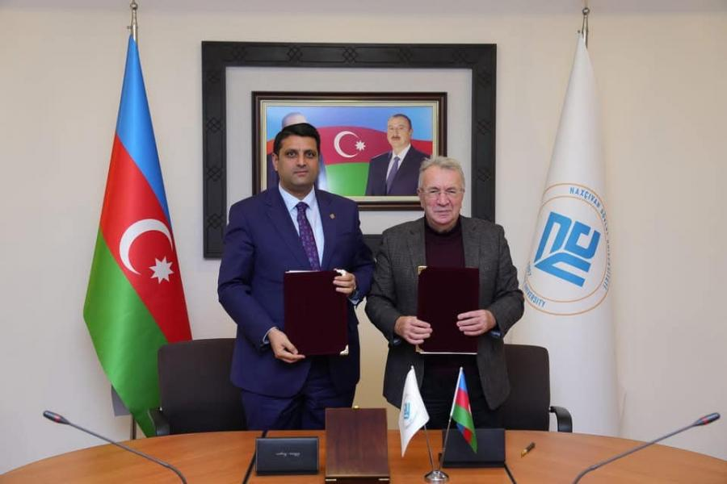
Cooperation Memorandum between ADA University and the Fields Institute
This memorandum was signed on 29 August 2025 in Baku by Professor Hafiz Pashayev, Rector of ADA University, and Professor Deirdre Haskell, Director of the Fields Institute (Canada), with organisational support and direct participation by Professor Messoud Efendiyev, Chair of WAAS.
Deirdre Haskell and Messoud Efendiyev also held a productive meeting at the State Committee on Work with Diaspora with its Chair, Dr. Fuad Muradov.
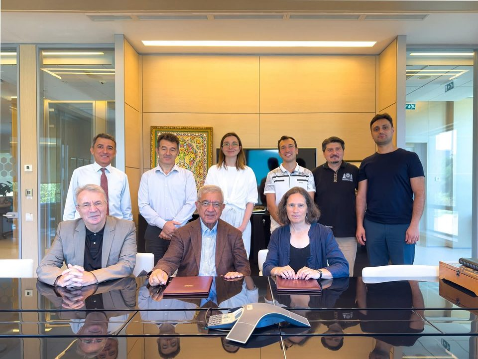
Cooperation Memorandum between Azerbaijan National Academy of Sciences (ANAS) and WAAS
This memorandum was signed on 4 November 2025 in Baku by Academician Isa Habibbayli, President of ANAS, and Professor Messoud Efendiyev, Chair of WAAS.
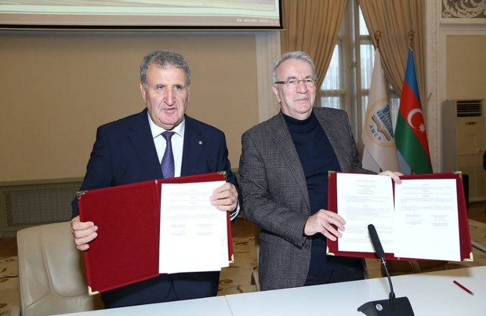
Cooperation Memorandum between AzMIU and Shanghai Jiao Tong University
This memorandum was concluded with the direct organisation and participation of Professor Messoud Efendiyev, Chair of WAAS. For this purpose, together with Professor Gulchohra Mammadova, Rector of AzMIU, Messoud Efendiyev undertook a working visit to Shanghai on 20–26 October 2025. During the visit, Messoud Efendiyev participated as a keynote speaker at the international conference Mathematics + AI (Artificial Intelligence).
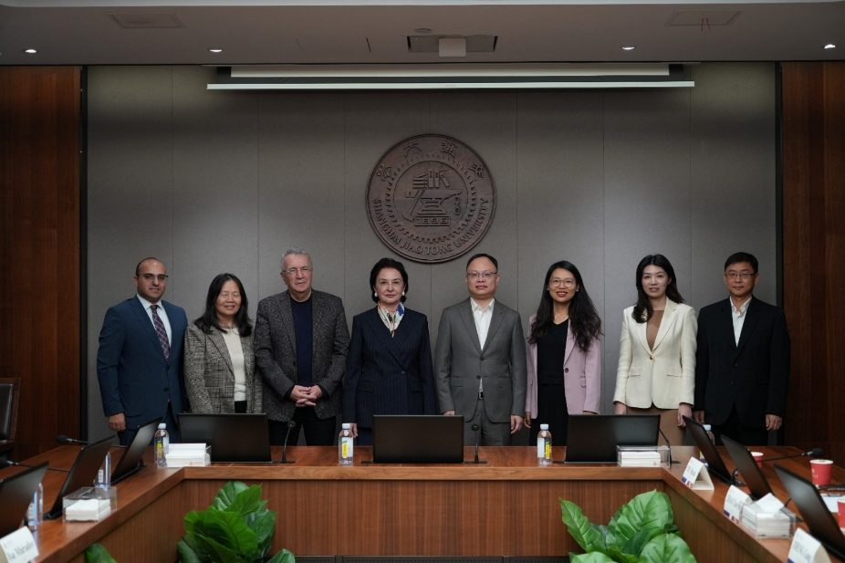
Cooperation Memorandum between Azerbaijan Medical University (ATU) and WAAS
This memorandum was signed on 10 April 2026 in Baku by Professor Garay Garaybeyli, Rector of Azerbaijan Medical University, and Professor Messoud Efendiyev, Chair of WAAS.
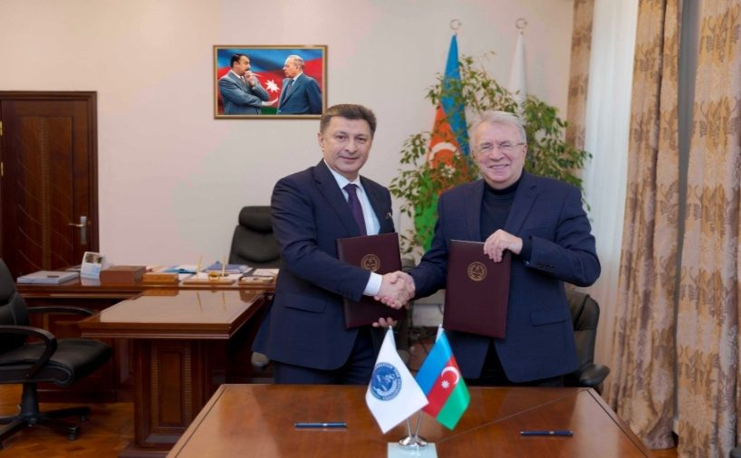
UNEC–WAAS Advisory Council
On the joint initiative of Professor Adalet Muradov, Rector of UNEC, and Professor Messoud Efendiyev, Chair of WAAS, the UNEC–WAAS Advisory Council was established on 7 February 2025 and its terms of reference were defined.
These memoranda and the advisory council have received substantial coverage in the Azerbaijani media.
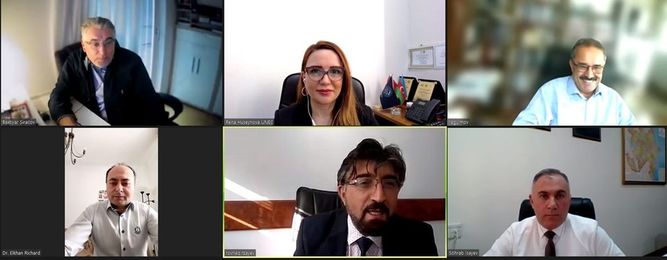
III. Azerbaijani universities where WAAS members are active — seminars, proposals, and lectures
Karabakh University
- Dinara Abbasova (Austria)
- Messoud Efendiyev (Germany)
- Mirza Mutallimov (Germany)
- Saadat Karimi (Sweden)
- Sevinj Mammadova (USA)
The individuals named above have delivered seminars at Karabakh University and, both in our online meeting and afterwards, contributed valuable proposals.
In early April 2026, Ms. Karimi and Messoud Efendiyev visited Karabakh University in Khankendi together and delivered seminars.
During the year, Saadat Karimi also taught online classes for students of Karabakh University and personally presented certificates from the University of Gothenburg to successful participants in Khankendi.
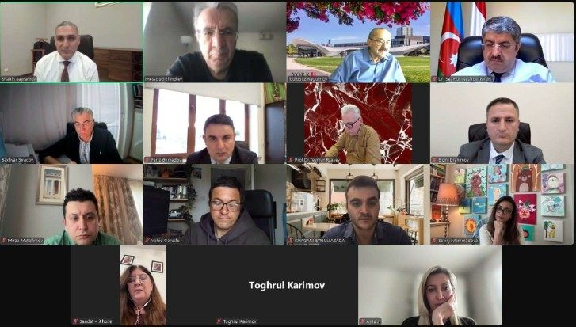
ADA University
- Elshad Allahyarov (USA)
- Ilham Axundov (Canada)
- Messoud Efendiyev (Germany)
- Natiq Atakishiyev (Mexico)
- Yulduz Rahimov (Canada)
The WAAS members named above have delivered seminars at ADA University. Particular note should be made of Scientific Secretary of WAAS Yulduz Rahimov's visit to ADA University's Gazakh branch and her productive discussions with the branch leadership.
Messoud Efendiyev, for his part, has held regular discussions with ADA University Rector Hafiz Pashayev, Vice-Rector Fariz Ismailzade, and Abzatdin Adamov (Dean, ADA University) on matters raised after the Forum. In return, ADA University staff member Samin Malik (PhD) was sent on a six-month assignment to Germany with Messoud Efendiyev's direct involvement and assistance (funded by the German side). Elchin Hasanalizade also applied to the Alexander von Humboldt Fellowship programme with Messoud Efendiyev's support.
Natiq Atakishiyev has already begun paid teaching at ADA University.
Azerbaijan State Pedagogical University (ASPU)
- Saadat Karimi (Sweden)
- Sevinj Mammadova (USA)
It should be noted that although ASPU was not represented at the First Forum, it was nevertheless included in WAAS's cooperation framework.
The WAAS members named above have delivered seminars at ASPU and played an active part in establishing links with universities abroad (in the field of dual-degree programmes).
Azerbaijan University of Architecture and Construction (AzMIU)
- Abdulla Avey (Türkiye)
- Lev Eppelbaum (Israel)
- Mark Appelbaum (Israel)
- Messoud Efendiyev (Germany)
- Saadat Karimi (Sweden)
- Togrul Karimov (Germany)
Togrul Karimov currently teaches "Artificial Intelligence" and "Fundamentals of Cybersecurity" at AzMIU (135 hours in total per semester) and supervises three master's dissertations. Messoud Efendiyev has been appointed Adviser to the Rector of that university. He also enabled two talented young scholars from AzMIU (Serkan Talibzade and Dr. Seynura Hasanova) to participate in international conferences on artificial intelligence and public health held in Shanghai, People's Republic of China (with all expenses covered by the organisers).
Messoud Efendiyev played a key role in preparing and signing a cooperation memorandum between AzMIU and Jiao Tong University in Shanghai, one of the leading universities of the People's Republic of China.
As a result of Messoud Efendiyev's nomination, Professor Nigar Aslanova, Vice-Rector of AzMIU, became the first Azerbaijani woman mathematician in the country's history to receive a one-month research visit to Canada (with Canadian funding) and the Fields Research Fellowship title, and was invited for a further one-month research visit in June 2026.
Lev Eppelbaum serves on the editorial board of the AzMIU journal. Mark Appelbaum has delivered seminars at AzMIU.
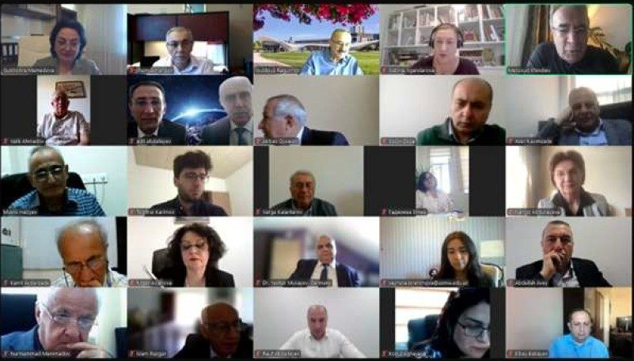
Nakhchivan State University (NDU)
- Elchin Bedelov (Türkiye)
- Messoud Efendiyev (Germany)
- Sevinj Mammadova (USA)
- Khalil Kelentarli (Japan)
The WAAS members named above deliver both seminars and in-person and online classes at NDU. A Cooperation Memorandum between NDU and WAAS has been signed.
Azerbaijan Technical University (AzTU)
- Vahid Garuslu (United Kingdom)
- Yashar Musayev (Germany)
These individuals deliver both seminars and classes at AzTU. Vahid Garuslu supervises three doctoral students.
Azerbaijan Medical University (ATU)
- Aziz Eftekhari (Türkiye)
- Reyhan Hasanova (France)
- Khagani Eynullazade (USA)
- Zarifa Osmanli (Italy)
Aziz Eftekhari, a new WAAS member from Türkiye, is implementing the joint ATU–WAAS "Nanobio-medicine" project at Azerbaijan Medical University together with Messoud Efendiyev. Preliminary agreement was reached at the ATU–WAAS online meeting on converting this project in future into a Nanobio-medicine Centre at ATU.
Preliminary agreement was also reached for the WAAS members named above to work at that centre.
Baku State University (BSU)
- Bakhtiyar Sirajov (Austria)
- Dinara Abbasova (Austria)
- Elshad Allahyarov (USA)
- Gharib Murshudov (United Kingdom)
- Mark Appelbaum (Israel)
- Natiq Atakishiyev (Mexico)
- Sevinj Mammadova (USA)
- Yulduz Rahimov (Canada)
The WAAS members named above deliver seminars and master classes at BSU.
Particular note should be made of Sevinj Mammadova's role in establishing BSU's links with universities in the United States and in organising repeated visits by their staff to BSU. Natiq Atakishiyev has already begun part-time teaching in the Department of Theoretical Physics at BSU.
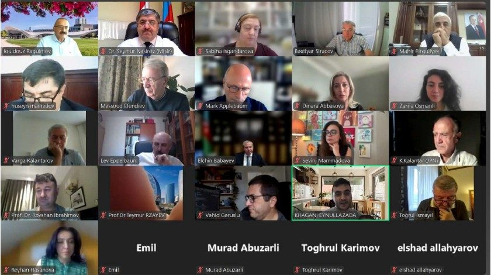
Baku Engineering University (BEU)
- Aynur Guliyeva (France)
- Murad Abuzarli (Austria)
- Rasim Jannatayev (Germany)
- Zaur Abdullayev (Germany)
The WAAS members named above were invited by the Rector of BEU at the BEU–WAAS online meeting to teach at BEU.
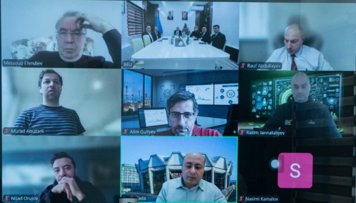
National Aviation Academy (NAA)
- Aziz Eftekhari (Türkiye)
- Emil Ahmadov (Russia)
- Messoud Efendiyev (Germany)
Aziz Eftekhari (Türkiye) conducts joint research with NAA staff and has already published a scientific article together with NAA members.
Messoud Efendiyev (Germany) has been one of the keynote speakers at the "February Lectures" organised by NAA for eleven years — an important event in Azerbaijan's science and education — and this year again delivered a keynote address on "The role of NAA in shaping Azerbaijan's scientific diaspora". Messoud Efendiyev is a member of the editorial board of NAA's scientific journal Sky. Emil Ahmadov (keynote speaker) and Diaspora Committee Chair Fuad Muradov also participated in this year's February Lectures.
Azerbaijan State University of Economics (UNEC)
- Bakhtiyar Sirajov (Austria)
- Elkhan Sadigzade (Germany)
- Rovshan Ibrahimov (South Korea)
- Yulduz Rahimov (Canada)
Following discussions, UNEC Rector Professor Adalet Muradov and WAAS Executive Board Chair Messoud Efendiyev agreed that several WAAS members would deliver paid classes at UNEC.
WAAS member Elkhan Sadigzade heads the relevant structure established at UNEC.
Bakhtiyar Sirajov and Yulduz Rahimov are members of the WAAS–UNEC Advisory Council. Yulduz Rahimov serves as coordinator of the WAAS–UNEC Advisory Council on behalf of WAAS.
Book on the Forum of Azerbaijani Scientists Living Abroad
Work on the book about the Forum of Azerbaijani Scientists Living Abroad, which we began in November 2024, has been completed. With financial support from the State Committee on Work with Diaspora, the book was submitted by WAAS to Zardabi Publishing House.
The text was edited by Sarvan Karimov and Bakhtiyar Sirajov, approved for printing on 21 April 2026, and assigned an ISBN number.
WAAS website
WAAS's existing website is updated regularly and enriched with new information. This work is carried out by Bakhtiyar Sirajov and Togrul Karimov. At the same time, work continues on the design and development of WAAS's new website. Under Togrul Karimov's project leadership, this is being implemented together with a group of students from the Faculty of Applied Mathematics and Cybernetics at BSU, with overall coordination by Bakhtiyar Sirajov.
UNEC vacancy announcements
Bakhtiyar Sirajov and Yulduz Rahimov took an active part in preparing UNEC's foreign faculty vacancy announcements and formalising them. A total of 36 vacancy announcements for the Faculty of Business Management and the Graduate School were published on the WAAS website.
Online meeting with teachers and pupils of Baku School No. 187
On 24 February 2026, Bakhtiyar Sirajov held an online meeting with teachers and pupils of Baku School No. 187, answered their questions, and provided participants with detailed information about WAAS's activities.
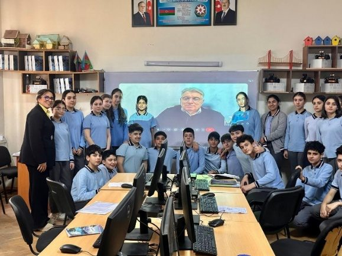
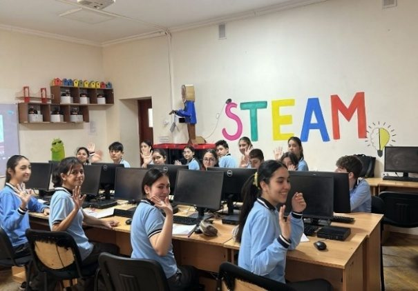
Meeting with teachers and pupils of Baku European Lyceum
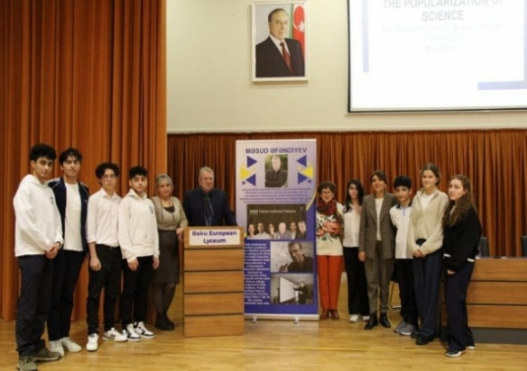
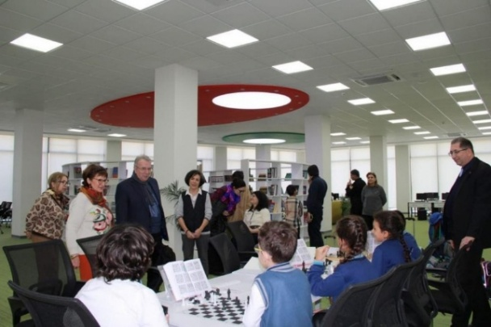
Meeting with school communities in Nakhchivan
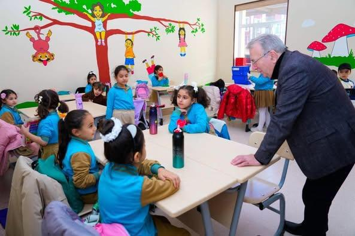
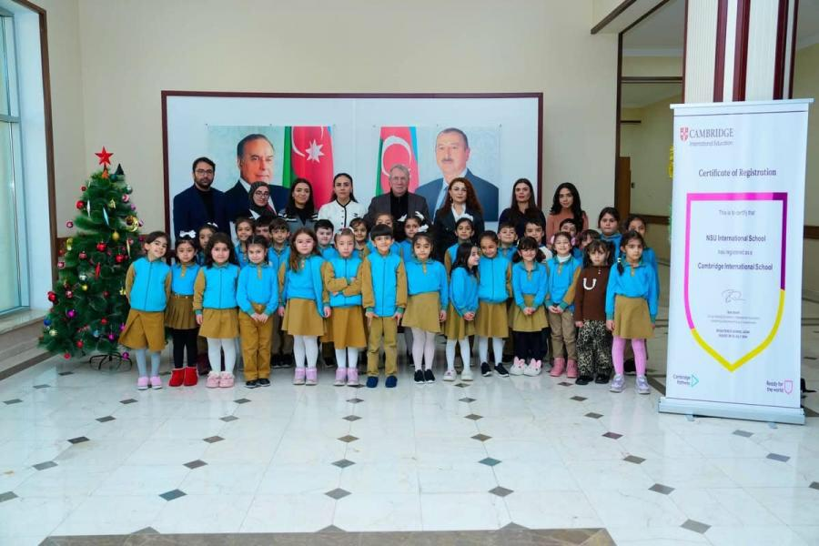